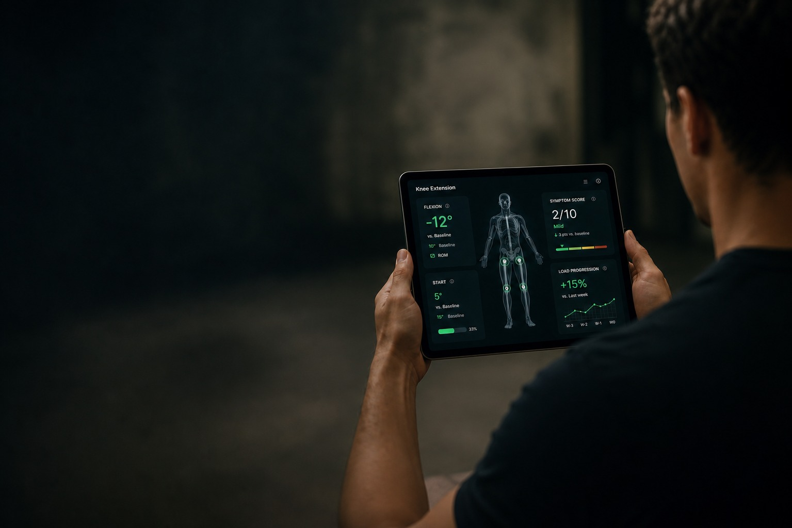
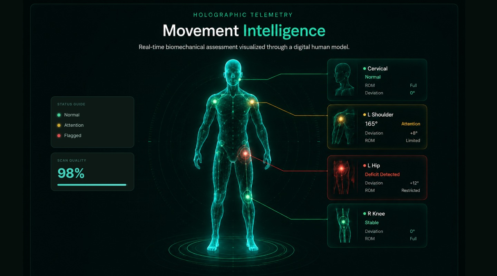
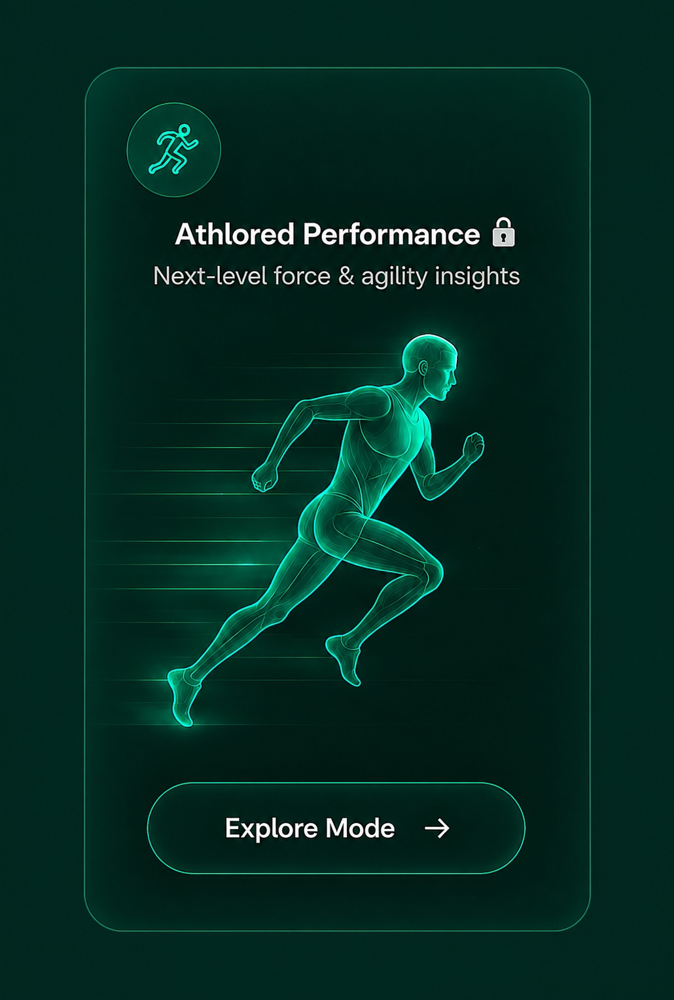

Coach Dashboard
Real-time overview of your athletes and patients.
Performance Telemetry
in One OS.
Unify objective ROM, active symptom feedback, and graded load progression in one clinical workspace. Engineered for modern physical therapy and sports science.

NeuCore OS unifies every part of the rehab journey—so nothing gets missed and every patient moves forward.
Explore PlatformReal-time overview of your athletes and patients.
Measure ROM, symmetry, angles, and quality.
Create structured, evidence-based rehab programs.
Log sessions, notes, and patient feedback.
Track outcomes and visualize patient progress.
Manage roles, permissions, and ensure compliance.

Holographic Telemetry
Real-time biomechanical assessment visualized through a digital human model.
Interface Roles
NeuCore adapts to every participant in the rehab cycle, presenting dedicated controls and views for each profile.
Manage your active clients
Your personal rehab journey
Today's workout
3 / 5 completed
Run your clinic with confidence
Next-level force & agility insights

Progress Stories
How coaches have applied objective telemetry, session notes, and phase gated rules in sample workflows.
Tracked midfoot load variance and range of motion during gait analysis to flag early instability risks. Instability data aids drills plan timing and load.
Example progress cardUtilized graded peak exposure workflows to enhance resilience. Graded exposures gradually advance load capacity.
Example progress cardObserved changes in whole chain load tolerance during rehab or reconditioning. Adjusted weekly routines dynamically using client logs.
Example progress cardGet Started
Join the sports medicine centers, clinics, and performance coaches running client programs on NeuCore.
The performance lane is being built alongside the rehab platform. It stays locked until force and agility assessment has been through the same clinical validation the rehab tools already passed.
Quick Survey
No account needed. We'll review and email you within one business day.
Thanks — we'll be in touch within one business day. In the meantime, explore the platform.